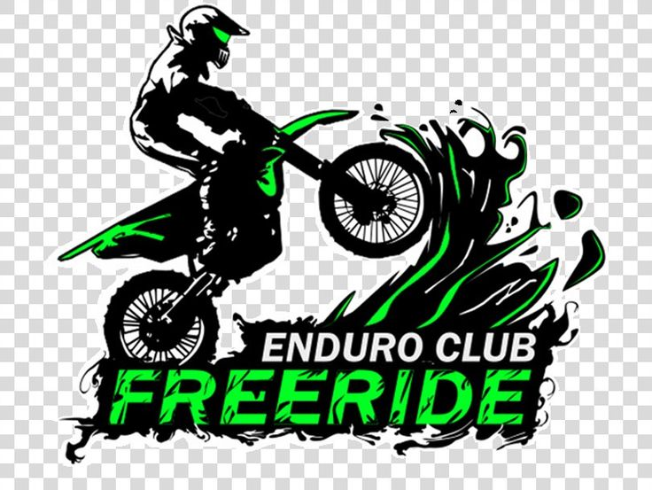

Cubiertas
Volver a home

Tipos de cubiertas y sus diferentes usos
1. **Cubiertas para Terreno Blando (Soft Terrain)**:
- *Marcas populares*: Dunlop Geomax MX33, Bridgestone Battlecross X30, Michelin Starcross 5 Soft.
- *Uso*: Estas cubiertas están diseñadas para terrenos blandos, como arena o barro. Tienen tacos más espaciados y profundos para una tracción óptima en terrenos sueltos y húmedos.
2. **Cubiertas para Terreno Intermedio (Intermediate Terrain)**:
- *Marcas populares*: Pirelli Scorpion MX32 Mid Soft, Maxxis Maxxcross MX-ST, Metzeler MC 360 Mid Soft.
- *Uso*: Ideales para terrenos mixtos o intermedios, como tierra compactada o grava. Tienen un diseño de taco que equilibra la tracción en terrenos sueltos y la estabilidad en terrenos más duros.
3. **Cubiertas para Terreno Duro (Hard Terrain)**:
- *Marcas populares*: Dunlop Geomax MX52, Michelin Starcross 5 Hard, Bridgestone Battlecross X40.
- *Uso*: Estas cubiertas son ideales para terrenos duros y rocosos. Tienen tacos más pequeños y densos para una mayor durabilidad y estabilidad en superficies duras.
4. **Cubiertas Todo Terreno (All Terrain)**:
- *Marcas populares*: Continental TKC 80, Shinko 244 Series, IRC M5B EVO.
- *Uso*: Estas cubiertas son versátiles y están diseñadas para ofrecer un buen rendimiento en una variedad de terrenos, desde asfalto hasta tierra, grava y lodo. Son ideales para motociclistas que viajan por diferentes tipos de terreno.
5. **Cubiertas para Motocross en Arena (Sand)**:
- *Marcas populares*: Dunlop Geomax MX12, Bridgestone Battlecross X20, Michelin Starcross 5 Sand.
- *Uso*: Especialmente diseñadas para ofrecer una tracción óptima en terrenos de arena suelta. Tienen un diseño de taco espaciado y agresivo para evitar hundirse en la arena y proporcionar una tracción estable.
Cada tipo de cubierta está diseñado para adaptarse a diferentes condiciones de terreno y estilo de conducción, por lo que es importante elegir la cubierta adecuada para maximizar el rendimiento y la seguridad durante la práctica del motocross.